에너지관리산업기사 (2014-05-25 기출문제)
1과목: 열역학 및 연소관리
1. 열 펌프의 성능계수를 나타낸 식은? (단, Q1은 고열원의 열량, Q2는 저열원의 열량이다.)
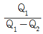
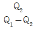
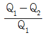
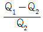
(정답률: 66%)

2. -10℃의 얼음 1kg에 일정한 비율로 열을 가할 때 시간과 온도의 관계를 바르게 나타낸 그림은? (단, 압력은 일정하다.)
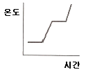
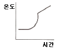
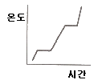
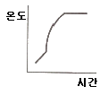
(정답률: 91%)
3. 열역학 제1법칙을 가장 잘 설명한 것은?
- 열 에너지가 기계적 에너지 보다. 고급의 에너지 형태이다.
- 열은 일과 같이 에너지의 이동 형태의 하나로 일과 열은 서로 변환될 수 있다.
- 제1종의 영구기관은 에너지의 공급 없이 영구히 일할 수 있는 기관으로 실현 가능하다.
- 시스템과 주위의 총 엔트로피는 계속 증가한다.
(정답률: 94%)
4. 기체가 가역 단열 팽창할 때와 가역 등 온팽창할 때 내부에너지의 감소량은?
- 같다.(변화가 없다.)
- 알 수 없다.
- 등온팽창 때가 크다.
- 단열팽창 때가 크다.
(정답률: 64%)
5. 몰리에선도로부터 파악하기 어려운 것은?
- 포화수의 엔탈피
- 과열증기의 과열도
- 포화증기의 엔탈피
- 과열증기의 단열팽창 후 상대습도
(정답률: 84%)
6. 1kg의 공기가 일정 온도 200℃에서 팽창하여 처음 체적의 6배가 되었다. 전달된 열량은 약 몇 kJ인가? (단, 공기의 기체상수는 0.287kJ/kg·K이다.)
- 243
- 321
- 413
- 582
(정답률: 57%)
7. 증기 동력사이클에서 열효율을 높이기 위하여 사용하는 방식으로 가장 적합한 것은?
- 재열 – 팽창사이클
- 재생 – 흡열사이클
- 재생 – 재열사이클
- 재열 – 방열사이클
(정답률: 88%)
8. 15℃인 공기 4kg이 일정한 체적을 유지하며 400kJ의 열을 받는 경우 엔트로피 증가량은 약 몇 kJ/K인가? (단, 공기의 정적 비열은 0.71kJ/kg·K이다.)
- 1.13
- 26.7
- 100
- 400
(정답률: 48%)
9. 다음 중 Mollier 선도를 이용하여 증기의 상태를 해석할 경우 가장 편리한 계산은?
- 터빈효율 계산
- 엔탈피 변화 계산
- 사이클에서 압축비 계산
- 증발시의 체적 증가량 계산
(정답률: 86%)
10. 절대온도 τ, 압력 P로 표시되는 가역 단열 과정에 대한 식으로 올바른 것은? (단, 비열비 k = Cp / Cv 이다.)
- TPk-1 = C
- TPk = C
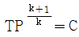
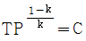
(정답률: 72%)
11. 증기를 터빈 내부에서 팽창하는 도중에 몇 단으로 나누어 그중 일부를 빼내어 급수의 가열에 사용하는 증기 사이클은?
- 랭킨 사이클(Rankine Cycle)
- 재열사이클(Reheating Cycle)
- 재생사이클(Regenerative Cycle)
- 추가사이클(Supplement Cycle)
(정답률: 68%)
12. “어떤 물체의 온도를 1℃ 높이는 데 필요한 열량”으로 정의되는 것은?
- 열관류량
- 열전도율
- 열전달률
- 열용량
(정답률: 85%)
13. 화력발전소에서 저위발열량 27,500kJ/kg인 유연탄을 시간당 170ton을 사용하여 500,000kW의 전기를 생산하고 있다. 이 화력발전소의 효율(%)은 얼마인가?
- 34
- 38
- 42
- 46
(정답률: 65%)
14. 압력 0.4MPa, 체적 0.8m3인 용기에 습증기 2kg이 들어 있다. 액체의 질량은 약 몇 kg 인가? (단, 0.4MPa에서 비제적은 포화액이 0.001m3/kg, 건포화증기가 0.46mg/kg이다.)
- 0.131
- 0.262
- 0.869
- 1.738
(정답률: 51%)
15. 2개의 물체가 또 다른 물체와 서로 열평형을 이루고 있으면 그를 상호 간에도 서로 열평형 상태에 있다."라는 것은 열역학 몇 법칙인가?
- 열역학 제0법칙
- 열역학 제1법칙
- 열역학 제2법칙
- 열역학 제3법칙
(정답률: 76%)
16. 여과 집진장치를 설명한 것으로 틀린 것은?
- 건식 집진 장치의 한 종류이다.
- 외형상의 여과속도가 느릴수록 미세한 입자를 포집할 수 있다.
- 100℃ 이상의 고온가스, 습가스의 처리에 적합하다.
- 집진효율이 좋고, 설비비용이 적게 든다.
(정답률: 67%)
17. 1kg의 메탄을 20kg의 공기와 연소시킬 때 과잉 공기율은 약 몇 %인가?
- 5%
- 14%
- 17%
- 21%
(정답률: 65%)
18. 다음 연료의 이론공기량(Smism)의 개략치가 가장 큰 것은?
- 오일 가스
- 석탄가스
- 천연가스
- 액화석유가스
(정답률: 73%)
19. 500℃ 와 0℃ 사이에서 운전되는 카르노 기관의 열효율은?
- 49.9%
- 64.7%
- 85.6%
- 100%
(정답률: 78%)
20. 메탄 1Sm3의 연소에 소요되는 이론공기량(Sm3)은?
- 8.9
- 9.5
- 11.1
- 13.2
(정답률: 65%)
2과목: 계측 및 에너지진단
21. 시료가스를 채취할 때의 주의 사항으로 틀린 것은?
- 채취구로부터 공기 침입이 없어야 한다.
- 시료가스의 배관은 가급적 짧게 한다.
- 드레인 배출장치 설치 여부와는 무관하다.
- 가스성분과 화학성분을 발생시키는 부품을 사용하지 않아야 한다.
(정답률: 77%)
22. 검출기에서 검출한 신호를 증폭하거나 다른 신호로 변환시켜 전달시키는 제어기기를 무 엇이라 하는가?
- 조작부
- 조절기
- 증폭기
- 전송기
(정답률: 68%)
23. 열전대의 접점온도가 T1, T3 일 때 열기전력은 접점온도가 T1, T2 일 때와 T2 T3 일 때의 열기전력을 합한 것과 같다. 이는 다음 어느 열전대 원리에 해당하는가?
- 제벡(Seebeck)효과
- 톰슨(Thomson)효과
- 중간금속의 법칙
- 중간온도의 법칙
(정답률: 68%)
24. 압력계 선택 시 유의하여야 할 사항으로 틀린 것은?
- 진동이나 충격 등을 고려하여 필요한 부속품을 준비하여야 한다.
- 사용목적에 따라 크기, 등급, 정도를 결정한다.
- 사용압력에 따라 압력계의 범위를 결정한다.
- 사용 용도는 고려하지 않아도 된다.
(정답률: 93%)
25. 수소(H2)가 연소되면 증기를 발생시킨다. 이 증기를 복수시키면 증발열이 발생한다. 만약 수소 1kg 을 연소시켜 증기를 완전 복수시키면 얼마의 증발열을 얻을 수 있는가?
- 600kcal
- 1,800kcal
- 5,400kcal
- 10,800kcal
(정답률: 76%)
26. 보일러 열 정산에서 출열 항목인 것은?
- 사용 시 연료의 발열량
- 연료의 현열
- 공기의 현열
- 배기가스의 보유열
(정답률: 80%)
27. 무게를 기준으로 한 단위로 힘(F), 길이(L), 시간(T)을 기준으로 하는 단위계는?
- 절대단위
- 중력단위
- 국제단위
- 실용단위
(정답률: 73%)
28. 증기보일러의 용량 표시 방법으로 일반적으로 가장 많이 사용되는 것으로 일명 정격용량 이라고도 하는 것은?
- 상당증발량
- 최고사용압력
- 상당방열면적
- 시간당 발열량
(정답률: 85%)
29. 다음 압력값 중 그 크기가 다른 것은?(문제 오류로 실제 시험에서는 1,2번이 정답처리 되었습니다. 여기서는 1번을 누르면 정답 처리 됩니다.)
- 760mmHg
- 1kg/cm2
- 1atm
- 14.7psi
(정답률: 76%)
30. 매시간 1,600kg의 연료를 연소시켜서 11.200kg/h의 증기를 발생시키는 보일러의 효율 은? (단, 석탄의 저위발열량은 6,040kcal/kg, 발생증기의 엔탈피는 742kcal/kg, 급수온도는 23℃ 이다.)
- 73.3%
- 83.3%
- 93.3%
- 98.6%
(정답률: 65%)
31. 다음 중 액면 촉정 방법이 아닌 것은?
- 퍼지식
- 부자식
- 정전 용량식
- 박막식
(정답률: 66%)
32. 다음 중 보일러 배기가스 중의 O2 농도 제어를 통해 연소 공기량을 미세하게 제어하는 시스템은?
- O2 트리밍
- O2 분석기
- O2 컨트롤러
- O2 센서
(정답률: 84%)
33. 다음 중 물리적 가스 분석계에 해당하는 것은?
- 오르자트 가스분석계
- 연소식 O2 계
- 미연소가스계
- 열전도율형 CO2 계
(정답률: 54%)
34. 실제 증발량 1,300kg/h, 급수온도 35℃, 전열면적 50m2인 노통연관식 보일러의 전열면 열부하는 약 몇 kcal/m2·h인가? (단, 발생 증기 엔탈피는 660kcal/kg이다.)
- 13,580
- 16,250
- 18,675
- 20,458
(정답률: 59%)
35. 보일러 열정산 시의 측정 사항이 아닌 것은?
- 배기가스 온도
- 급수 압력
- 연료사용량 및 발열량
- 외기온도 및 기압
(정답률: 71%)
36. 방사된 열에너지의 성질과 양을 이용하여 온도를 측정하는 계기가 아닌 것은?
- 압력식 온도계
- 광고 온도계
- 광전관식 온도계
- 방사 온도계
(정답률: 73%)
37. 고온 촉정용으로 가장 적합한 온도계는?
- 금속저항온도계
- 유리온도계
- 열전대온도계
- 압력온도계
(정답률: 91%)
38. 여러 가지 주파수의 정현파(sin파)를 입력신호로 하여 출력의 진폭과 위상각의 지연으로부터 계의 동특성을 규명하는 방법은?
- 시정수
- 프로그램제어
- 주파수응답
- 비례제어
(정답률: 88%)
39. 노 내의 온도 측정이나 벽돌의 내화도 측정용으로 사용되는 온도계는?
- 제겔콘
- 바이메탈온도계
- 색온도계
- 서미스터 온도계
(정답률: 82%)
40. 보일러 냉각기의 진공도가 730mmHg일 때 절대압력으로 표시하면 약 몇 kg/cm2인가?
- 0.02
- 0.04
- 0.12
- 0.18
(정답률: 64%)
3과목: 열설비구조 및 시공
41. 보일러의 계속사용 안전검사 유효기간은?
- 1년
- 2년
- 3년
- 4년
(정답률: 86%)
42. 에너지이용합리화법 시행규칙상 인정검사대상기기 조종자의 교육을 이수한 자의 조정 범위가 아닌 것은?
- 용량이 10t/h 이하인 보일러
- 압력 용기
- 증기보일러로서 최고사용압력이 1MPa 이하이고, 전열면적이 10m2 이하인 것
- 열매체를 가열하는 보일러로서 용량이 581.5kW 이하인 것
(정답률: 76%)
43. 입형 보일러의 특징에 대한 설명으로 틀린 것은?
- 설치면적이 작다.
- 설치가 간편하다.
- 전열면적이 작다.
- 열효율이 좋고 부하능력이 크다.
(정답률: 78%)
44. 복사열에 대한 반사 특성을 이용하여 보온효과를 얻는 보온재 중 가장 효과가 큰 것은?
- 실리카 화이버
- 염화비닐 장판
- 마스틱(Mastic)
- 알루미늄 판
(정답률: 73%)
45. 여러 용도에 쓰이는 물질과 그 물질을 구분하는 기준온도에 대한 설명으로 틀린 것은?
- 내화물이란 SK26 이상 물질을 말한다
- 단열재는 800~1,200℃ 및 단열효과가 있는 재료를 말한다.
- 무기질 보온재는 500~800℃에 견디어 보온하는 재료를 말한다.
- 내화단열재는 SK20 이상 및 단열효과가 있는 재료를 말한다.
(정답률: 69%)
46. 검사대상 증기보일러의 안전밸브로 사용하는 것은?
- 스프링식 안전밸브
- 지렛대식 안전밸브
- 중추식 안전밸브
- 복합식 안전밸브
(정답률: 90%)
47. 연료전지 중 작동온도가 높고 고효율이며 유연성이 좋으나 전지부품의 고온부식이 일어나는 단점이 있는 것은?
- 용융탄산염 연료전지
- 재생형 연료전지
- 고분자전해질 연료전지
- 인산형 연료전지
(정답률: 75%)
48. 가마를 사용하는 데 있어 내용수명(耐用壽命)과의 관계가 가장 먼 것은?
- 열처리 온도
- 가마 내의 부착물(휘발분 및 연료의 재)
- 온도의 급변
- 피열물의 열용량
(정답률: 82%)
49. 열사용 기자재 관리규칙상 검사대상기기의 설치자가 그 사용 중인 검사대상기기를 폐기한 때에는 그 폐기한 날로부터 며칠 이내에 신고하여야 하는가?
- 15일
- 20일
- 30일
- 60일
(정답률: 83%)
50. 관의 안지름을 D(cm), 평균유속을 V(m/s)라 하면 평균 유량 Qm3/s 를 구하는 식은?
- Q = DV
- Q = πD2V
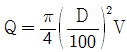
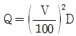
(정답률: 88%)
51. 파이프 바이스의 크기 표시는?
- 레버의 크기
- 고정 가능한 관경의 치수
- 죠를 최대로 벌려 놓은 전체 길이
- 프레임(Frame)의 가로 및 세로 길이
(정답률: 81%)
52. 에너지이용합리화법 시행규칙에서 정한 특정 열사용 기자재 및 그 설치 시공범위의 구 분에서 품목명에 포함되지 않는 것은?
- 용선로
- 태양열 집광기
- 1종압력용기
- 구멍탄용 온수보일러
(정답률: 70%)
53. 증기보일러의 전열면에서 벽의 두께는 22mm, 열전도율은 50kcal/m·h·℃이고 열전달률 은 열가스 측이 18kcal/m2·h·℃, 물 측이 5,200kcal/m2·h·℃이다. 물 측에 평균두께 3mm의 물때(열전도율 1.8kcal/m·h·℃)와 가스 측에 평균두께 1mm의 그을음(열전도율 0.1kcal/m·h·℃)이 부착되어 있는 경우 열관류율은 약 몇 kcal/m2·h·℃ 인가? (단, 전열면은 평면이다.)
- 11.7
- 14.7
- 25.3
- 28.7
(정답률: 54%)
54. 에너지이용 합리화법 시행규칙에 따라 가스를 사용하는 소형 온수보일러 중 검사대상기 기에 해당되는 것은 가스사용량이 몇 kg/h를 초과하는 경우인가?
- 10kg/h
- 13kg/h
- 17kg/h
- 15kg/h
(정답률: 78%)
55. 보온재 선정 시 고려하여야 할 조건 중 틀린 것은?
- 부피비중이 적어야 한다.
- 열전도율이 가능한 높아야 한다.
- 흡수성이 적고, 가공이 용이하여야 한다.
- 불연성이고 화재 시 유독가스를 발생하지 않아야 한다.
(정답률: 88%)
56. 2개의 증기드럼 하부에 하나의 물드럼을 배치하고 삼각형 순환도를 형성하는 급경사 곡관형 보일러는?
- 가르베 보일러
- 야로 보일러
- 스털링 보일러
- 타쿠마 보일러
(정답률: 78%)
57. 다음 중 관류보일러로 맞는 것은?
- 술저(Sulzer) 보일러
- 라몬트(Lamont) 보일러
- 벨럭스(Velox) 보일러
- 타쿠마(Takuma) 보일러
(정답률: 89%)
58. 피열물을 부압의 가마 내에서 가열 시 피열물이 받는 영향은?
- 환원되기 쉽다.
- 내부 열이 유출된다.
- 산화되기 쉽다.
- 중성이 유지된다.
(정답률: 77%)
59. 다음 중 노재가 갖추어야 할 조건이 아닌 것은?
- 사용 온도에서 연화 및 변형이 되지 않을 것
- 팽창 및 수축이 잘될 것
- 혼도 급변에 의한 파손이 적을 것
- 사용목적에 따른 열전도율을 가질 것
(정답률: 87%)
60. 증기 엔탈피가 2,800kJ/kg이고, 급수 엔탈피가 125kJ/kg일 때 증발계수는 약 얼마인가? (단, 100℃, 포화수가 증발하여 100℃의 건포화증기로 되는데 필요한 열량은 2,256.9kJ/kg이다.)
- 1.0
- 1.2
- 1.4
- 1.6
(정답률: 65%)
4과목: 열설비취급 및 안전관리
61. 보일러 외부 청소법 중 수관 보일러에 대한 가장 적합한 기구는?
- 슈트 블로어
- 워터 쇼킹
- 스크랩퍼
- 샌드 블라스트
(정답률: 71%)
62. 보일러의 급수처리 방법에 해당되지 않는 것은?
- 이온교환법
- 증류법
- 희석법
- 여과법
(정답률: 63%)
63. 보일러의 고온부식 방지대책으로 틀린 것은?
- 회분 개질제를 첨가하여 바나듐의 융점을 낮춘다.
- 연료 중의 바나듐 성분을 제거한다.
- 고온가스가 접촉되는 부분에 보호피막을 한다.
- 연소가스 온도를 바나듐의 융점온도 이하로 유지한다.
(정답률: 75%)
64. 다음 중 저온부식의 원인이 되는 성분은?
- 휘발성분
- 회분
- 탄소분
- 황분
(정답률: 86%)
65. 에너지 다소비 사업자는 연료·열 및 전력의 연간 사용량의 합계가 몇 티오이 이상인 자를 말하는가?
- 500
- 1,000
- 1,500
- 2,000
(정답률: 86%)
66. 다음 반응 중 경질 스케일 반응식으로 옳은 것은?
- Ca(HCO3)+열 → CaCO3 +H2O + CO2
- 3CasO4 + 2Na3PO4 → Ca3(PO4)3 + 3Na2SO4
- MgSO4+CaCO3 + H2O → CaSO4+Mg(OH)2 + CO2
- MgCO3+H2O → Mg(OH)2 + CO2
(정답률: 86%)
67. 보일러에서 습증기의 발생으로 증기수송관의 방열 손실로 이어지는 원인이 아닌 것은?
- 저수위 운전
- 피크(Peak) 부하 발생
- 보일러의 저압운전
- 보일러수 내에 고형물 과다
(정답률: 66%)
68. 환수관이 고장을 일으켰을 때 보일러의 물이 유출하는 것을 막기 위하여 하는 배관방법은?
- 리프트 이음 배관법
- 하아트 포드 연결법
- 이경관 접속법
- 증기 주관 관말 트랩 배관법
(정답률: 83%)
69. 에너지이용합리화 기본계획을 수립하는 기관의 장은?
- 안전행정부장관
- 국토교통부장관
- 산업통상자원부장관
- 고용노동부장관
(정답률: 89%)
70. 에너지 사용량의 신고 대상인 자가 매년 1월 31일 까지 신고해야 할 사항이 아닌 것은?
- 전년도의 수지계산서
- 전년도의 에너지이용 합리화 실적
- 해당 연도의 에너지 사용 예정량
- 에너지 사용기자재의 현황
(정답률: 79%)
71. 보일러가 급수 부족으로 과열되었을 때의 조치로 가장 적합한 것은?
- 급속히 급수하여 냉각시킨다.
- 연도 댐퍼를 닫고, 증기를 취출한다.
- 연소를 중지하고, 서서히 냉각시킨다.
- 소량의 연료 및 연소용 공기를 계속 공급한다.
(정답률: 78%)
72. 보일러실 내의 유류화재 시 소화설비로 가장 적합한 것은?
- 스프링클러 설비
- 분말소화 설비
- 연결살수 설비
- 옥내소화전 설비
(정답률: 87%)
73. 에너지사용계획을 수립하여 산업통상자원부장관에게 제출하여야 하는 사업주관자에 해 당되지 않는 사업은?
- 에너지 개발사업
- 관광단지 개발사업
- 철도 건설사업
- 주택 개발사업
(정답률: 85%)
74. 다음 ( )안에 각각 들어갈 말은?
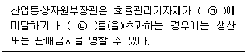
- ㉠ 최대소비효율기준, ㉡최저 사용량기준
- ㉠ 적정소비 효율기준, ㉡적정 사용량기준
- ㉠ 최저소비효율기준, ㉡최대사용량기준
- ㉠ 최대사용량기준, ㉡저소비효율기준
(정답률: 90%)
75. 보일러 안전밸브에서 증기의 누설 원인으로 틀린 것은?
- 밸브와 밸브 시트 사이에 이물질이 존재한다.
- 밸브 입구의 직경이 증기 압력에 비해서 너무 작다.
- 밸브 시트가 오염되어 있다.
- 밸브가 밸브 시트를 균일하게 누르지 못한다.
(정답률: 84%)
76. 보일러의 만수보존을 실시하고자 할 때 사용되는 약제가 아닌 것은?
- 가성소다
- 생석회
- 히드라진
- 아황산소다
(정답률: 61%)
77. 증기난방의 응축수 환수방법 중 증기의 순환 속도가 가장 빠른 환수방식은?
- 진공 환수식
- 기계 환수식
- 중력 환수식
- 강제 환수식
(정답률: 89%)
78. 어떤 보일러수의 불순물 허용농도가 500ppm이고, 급수량이 1일 50톤이며, 급수 중의 고형물 농도가 20ppm 일 때 분출률은 약 얼마인가?
- 2.4%
- 3.2%
- 4.2%
- 5.4%
(정답률: 41%)
79. 보일러 내처리제 중 가성취화 방지에 사용되는 약제는?
- 히드라진
- 염산
- 암모니아
- 인산나트륨
(정답률: 54%)
80. 다음 중 2년 이하의 징역 또는 2,000만원 이하의 벌금에 처하는 경우는?
- 에너지 저장의 무를 이행하지 아니한 경우
- 검사대상기기 조종자를 선임하지 아니한 경우
- 검사대상기기의 사용정지 명령에 위반한 경우
- 검사대상기기 를 설치하고 검사를 받지 아니하고 사용한 경우
(정답률: 74%)